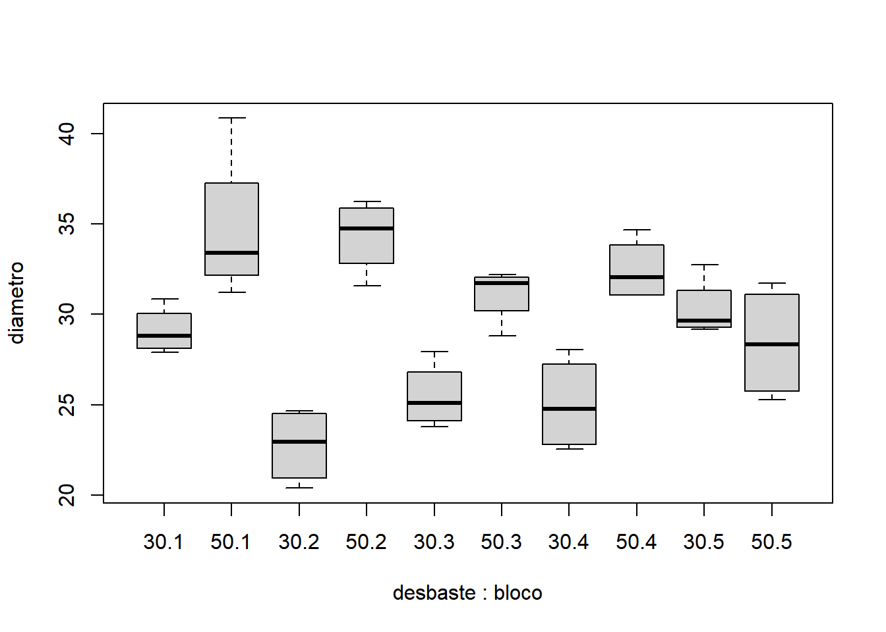

Cap. 7 Delineamento em blocos casualizados
Nos experimentos em blocos casualizados (DBC), além do tratamento, uma segunda fonte de variação controlada é inserida no modelo e é denominada de bloco. O bloco é inserido pelo analista para controlar uma variação conhecida do ambiente, como por exemplo tipo de solo, insolação e outros. Assim a ANOVA contará com três fontes de variação: duas fontes de variação conhecidas (tratamento e bloco), e uma fonte de variação desconhecida (resíduo).
Vale destacar, que no DBC, não há interesse pela interação do bloco com o tratamento, sendo o bloco apenas para controlar uma possível variação sobre os tratamentos induzida por uma possível variação do ambiente. O modelo estatístico do delineamento em blocos casualizados é:
\[Y = \bar{X} + BLOCO + TRAT + Erro\]
A análise começa pela determinação das somas de quadrados total, composta pela soma de quadrado do tratamento, pela soma de quadrado do bloco e pela soma de quadrado do resíduo. Em seguida, calculam-se os quadrados médios do tratamento e do resíduo e o valor da estatística F. Se F calculado for superior ao F tabelado, assume-se que existe um efeito devido aos tratamentos, ao passo que se F calculado for inferior ao F tabelado, não há evidências suficientes para rejeitar a hipótese nula, aceitando-se a hipótese de que não existe efeito dos tratamentos.
Embora em alguns softwares o teste F para o bloco seja realizado, o mesmo não é necessário. O utilidade do bloco é apenas isolar uma possível variação atribuída ao ambiente. Uma vez que tenha optado pelo uso do bloco, é irrelevante encontrar sua significância (ou não significância). Sendo o efeito dos tratamentos significativo, realiza-se o desdobramento do efeito dos tratamentos por meio de um teste de médias, se os tratamentos forem qualitativos, ou por meio de uma análise de regressão se os tratamentos forem quantitativos.
Para a análise de experimentos em blocos casualizados, como não há no modelo estatístico a influência da interação, utiliza-se o pacote ExpDes.pt tanto para o caso balanceado, quanto para o desbalanceado.
7.1 O caso balanceado
Para exemplificar o caso balanceado, será analisado um estudo sobre a influência de duas intensidades de desbaste no diâmetro de árvores. Os desbastes foram repetidos em 4 parcelas para cada um dos cinco blocos. Os blocos foram considerados para isolar o efeito dos diferentes tipos de solo. Os dados podem ser resumidos através dos seguintes tópicos:
- Tratamento: 2 intensidades de desbaste (30% e 50%)
- 5 Blocos
- 4 repetições
- Variável de interesse: diâmetro
| desbaste | bloco | rep | diametro |
|---|---|---|---|
| 30 | 1 | 1 | 28.37041 |
| 30 | 1 | 2 | 29.28010 |
| 30 | 1 | 3 | 30.84926 |
| 30 | 1 | 4 | 27.89227 |
| 30 | 2 | 1 | 20.38856 |
| 30 | 2 | 2 | 21.47290 |
| 30 | 2 | 3 | 24.39744 |
| 30 | 2 | 4 | 24.65861 |
| 30 | 3 | 1 | 23.79856 |
| 30 | 3 | 2 | 25.69388 |
| 30 | 3 | 3 | 24.45922 |
| 30 | 3 | 4 | 27.94071 |
| 30 | 4 | 1 | 28.05501 |
| 30 | 4 | 2 | 26.42934 |
| 30 | 4 | 3 | 23.09124 |
| 30 | 4 | 4 | 22.54273 |
| 30 | 5 | 1 | 32.73052 |
| 30 | 5 | 2 | 29.17538 |
| 30 | 5 | 3 | 29.94747 |
| 30 | 5 | 4 | 29.35810 |
| 50 | 1 | 1 | 31.20701 |
| 50 | 1 | 2 | 40.85273 |
| 50 | 1 | 3 | 33.66891 |
| 50 | 1 | 4 | 33.15001 |
| 50 | 2 | 1 | 34.03869 |
| 50 | 2 | 2 | 36.24517 |
| 50 | 2 | 3 | 35.49081 |
| 50 | 2 | 4 | 31.58952 |
| 50 | 3 | 1 | 31.92634 |
| 50 | 3 | 2 | 28.82107 |
| 50 | 3 | 3 | 32.18963 |
| 50 | 3 | 4 | 31.55686 |
| 50 | 4 | 1 | 31.11534 |
| 50 | 4 | 2 | 31.05093 |
| 50 | 4 | 3 | 34.69215 |
| 50 | 4 | 4 | 32.95378 |
| 50 | 5 | 1 | 25.26880 |
| 50 | 5 | 2 | 30.48375 |
| 50 | 5 | 3 | 31.73922 |
| 50 | 5 | 4 | 26.21619 |
O primeiro passo é importar o arquivo do experimento para dentro do R. Esta tarefa pode ser realizada através do seguinte comando:
Antes de partir para a análise, é fundamental explorar os dados de forma gráfica para conhecer melhor os dados e antecipar o resultado da análise estatística. A construção do gráfico ajuda na compreensão do fenômeno estudado e na validação da análise estatística escolhida. Por se tratar de um experimento com o tratamento formado por níveis quantitativos, porém com apenas dois níveis, recomenda-se o uso do boxplot().

Note que os rótulo do eixo X são compostos pela união do desbaste e do bloco. Pode ser que dependendo do espaço disponível alguns rótulos sejam omitidos, mas ele devem ser lidos alternadamente, uma caixa para 30.1, outra para 50.1, depois 30.2, seguido de 50.2 e assim por diante.
Os tratamentos podem ser analisados isoladamente em relação a cada bloco, utilizando um filtro para escolher qual bloco considerar.
- Para bloco igual a 1:
- Para bloco igual a 2:
- Para bloco igual a 3:

- Para bloco igual a 4:

- Para bloco igual a 5:

Pelo gráfico obtido, é razoável esperar que haja diferenças significativas entre as intensidades de desbaste (30% e 50%), pois existe um distanciamento entre os interquartis especialmente nos blocos 1 e 2. Também é possível esperar que não haja um efeito significativo dos blocos. Assim, espera-se que a análise estatística do experimento corrobore a conclusão empírica baseada no interpretação do gráfico.
Com a função dbc() do pacote ExpDes.pt será possível realizar toda a análise de um experimento de delineamento em blocos casualizados, inclusive desdobramentos. Para consultar a sintaxe do comando digita-se no console:
Nas informações sobre a função ?dbc, nota-se que a sintaxe básica da função dbc() é:
A análise do experimento em questão pode ser então realizada pelo comando:
## ------------------------------------------------------------------------
## Quadro da analise de variancia
## ------------------------------------------------------------------------
## GL SQ QM Fc Pr>Fc
## Tratamento 1 323.34 4 30.4546 0.000004
## Bloco 4 69.49 3 1.6363 0.187727
## Residuo 34 360.98 2
## Total 39 753.80 1
## ------------------------------------------------------------------------
## CV = 11.09 %
##
## ------------------------------------------------------------------------
## Teste de normalidade dos residuos
## valor-p: 0.9155415
## De acordo com o teste de Shapiro-Wilk a 5% de significancia, os residuos podem ser considerados normais.
## ------------------------------------------------------------------------
##
## ------------------------------------------------------------------------
## Teste de homogeneidade de variancia
## valor-p: 0.3001718
## De acordo com o teste de han a 5% de significancia, as variancias podem ser consideradas homogeneas.
## ------------------------------------------------------------------------
##
## Teste de Tukey
## ------------------------------------------------------------------------
## Grupos Tratamentos Medias
## a 50 32.21285
## b 30 26.52659
## ------------------------------------------------------------------------A interpretação da saída de um delineamento em blocos casualizados é muito parecido com os experimento em DIC. A inclusão do bloco como fonte de variação, não trás nenhuma implicação já que o bloco visa apenas isolar um potencial efeito do ambiente não controlado durante a instalação do experimento.
Neste primeiro exemplo, os resíduos apresentaram normalidade e o efeito dos tratamentos foi significativo. Como existem apenas dois níveis, a significância do teste F já é conclusivo. De qualquer forma, a função dbc() realiza também um teste de médias que apenas reforça o resultado do teste F, indicando que o grupo a obteve média maior que o grupo b.
7.2 O caso desbalanceado
Embora o delineamento em blocos casualizados, tenha além do tratamento, o efeito do bloco, estes são analisados de forma independente sem considerar a interação entre eles. A rigor, a definição de blocos visa apenas controlar uma possível fonte de variação do ambiente não controlada pelo experimento. Desta forma, por não haver interação, o caso de DBC desbalanceado pode ser analisado através da ANOVA do Tipo I.
Na sequência, será utilizado o mesmo exemplo anterior, mas assumindo que foi perdida uma parcela devido à um incêndio: a repetição 1, do bloco 2 do tratamento intensidade de desbaste de 30%:
- Tratamento: 2 intensidades de desbaste
- 5 Blocos
- 4 repetições
- Variável de interesse: diâmetro
- Parcela perdida: Tratamento 30, Bloco 2, Repetição 1.
| desbaste | bloco | rep | diametro |
|---|---|---|---|
| 30 | 1 | 1 | 28.37041 |
| 30 | 1 | 2 | 29.28010 |
| 30 | 1 | 3 | 30.84926 |
| 30 | 1 | 4 | 27.89227 |
| 30 | 2 | 2 | 21.47290 |
| 30 | 2 | 3 | 24.39744 |
| 30 | 2 | 4 | 24.65861 |
| 30 | 3 | 1 | 23.79856 |
| 30 | 3 | 2 | 25.69388 |
| 30 | 3 | 3 | 24.45922 |
| 30 | 3 | 4 | 27.94071 |
| 30 | 4 | 1 | 28.05501 |
| 30 | 4 | 2 | 26.42934 |
| 30 | 4 | 3 | 23.09124 |
| 30 | 4 | 4 | 22.54273 |
| 30 | 5 | 1 | 32.73052 |
| 30 | 5 | 2 | 29.17538 |
| 30 | 5 | 3 | 29.94747 |
| 30 | 5 | 4 | 29.35810 |
| 50 | 1 | 1 | 31.20701 |
| 50 | 1 | 2 | 40.85273 |
| 50 | 1 | 3 | 33.66891 |
| 50 | 1 | 4 | 33.15001 |
| 50 | 2 | 1 | 34.03869 |
| 50 | 2 | 2 | 36.24517 |
| 50 | 2 | 3 | 35.49081 |
| 50 | 2 | 4 | 31.58952 |
| 50 | 3 | 1 | 31.92634 |
| 50 | 3 | 2 | 28.82107 |
| 50 | 3 | 3 | 32.18963 |
| 50 | 3 | 4 | 31.55686 |
| 50 | 4 | 1 | 31.11534 |
| 50 | 4 | 2 | 31.05093 |
| 50 | 4 | 3 | 34.69215 |
| 50 | 4 | 4 | 32.95378 |
| 50 | 5 | 1 | 25.26880 |
| 50 | 5 | 2 | 30.48375 |
| 50 | 5 | 3 | 31.73922 |
| 50 | 5 | 4 | 26.21619 |
O primeiro passo é importar o arquivo csv contendo os resultados do experimento para dentro do R. Esta tarefa pode ser realizada através do seguinte comando:
Mesmo no caso desbalanceado, a análise gráfica é fundamental e deve preceder qualquer análise estatística:
Os tratamentos podem ser analisados isoladamente em relação a cada bloco, utilizando um filtro para escolher qual bloco considerar.
- Para bloco igual a 1:

- Para bloco igual a 2:
- Para bloco igual a 3:
- Para bloco igual a 4:
- Para bloco igual a 5:
Como já discutido anteriormente, por não haver cálculo de interação entre fontes de variação, o DBC pode ser analisado usando o pacote ExpDes.pt e sua função dbc():
## ------------------------------------------------------------------------
## Quadro da analise de variancia
## ------------------------------------------------------------------------
## GL SQ QM Fc Pr>Fc
## Tratamento 1 280.26 3 28.2071 0.000007
## Bloco 4 62.92 2 1.5832 0.201872
## Residuo 33 327.89 4
## Total 38 671.07 1
## ------------------------------------------------------------------------
## CV = 10.65 %
##
## ------------------------------------------------------------------------
## Teste de normalidade dos residuos
## valor-p: 0.9523324
## De acordo com o teste de Shapiro-Wilk a 5% de significancia, os residuos podem ser considerados normais.
## ------------------------------------------------------------------------
##
## ------------------------------------------------------------------------
## Teste de homogeneidade de variancia
## valor-p: 0.3579419
## De acordo com o teste de han a 5% de significancia, as variancias podem ser consideradas homogeneas.
## ------------------------------------------------------------------------
##
## Teste de Tukey
## ------------------------------------------------------------------------
## Grupos Tratamentos Medias
## a 50 32.21285
## b 30 26.84964
## ------------------------------------------------------------------------